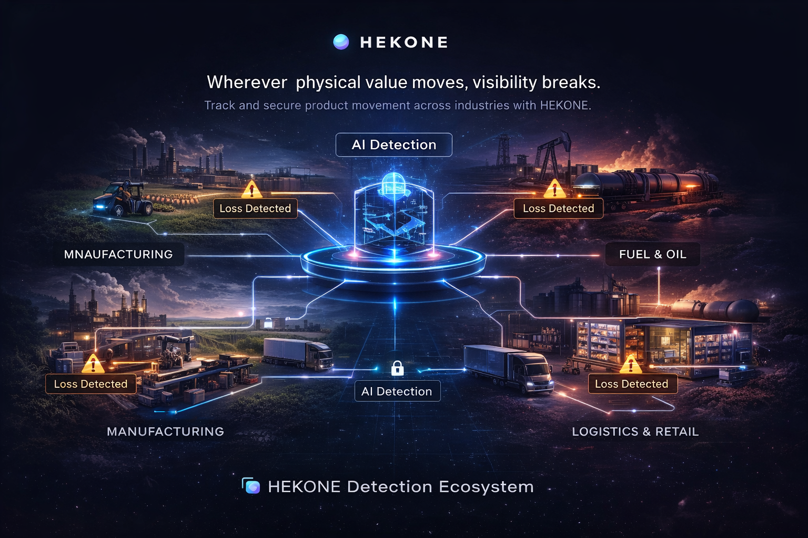
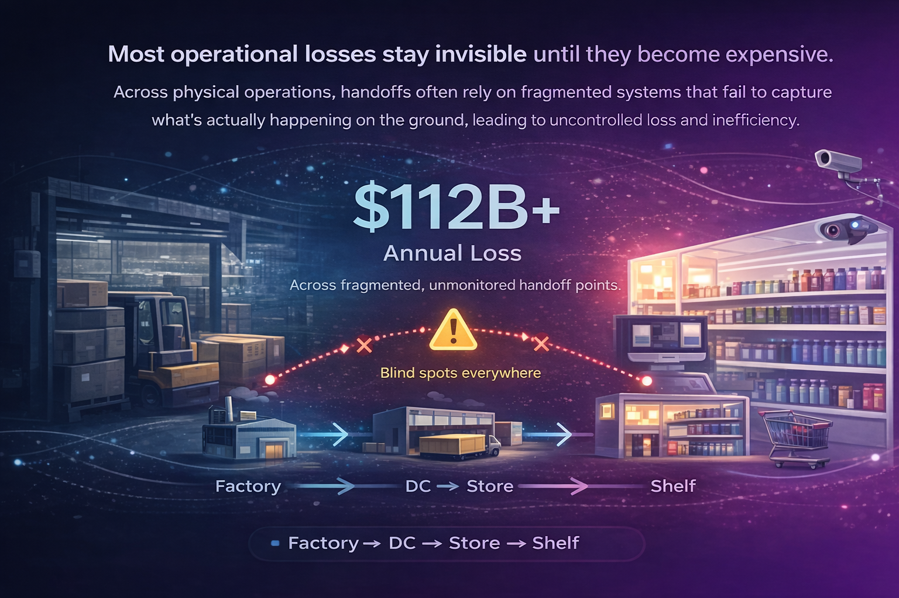
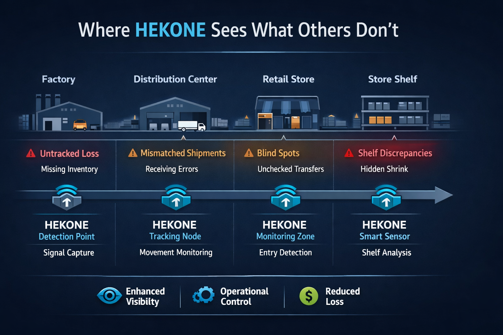
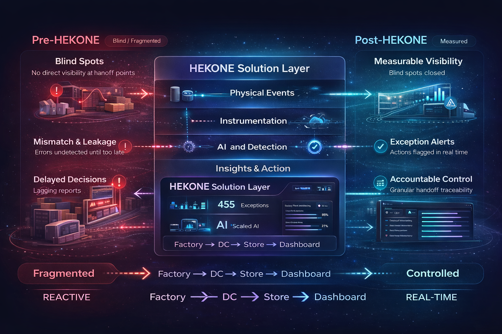

Make the invisible measurable.
HEKONE adds a physical intelligence layer to operations, helping teams detect blind spots, reduce hidden loss, and act earlier at critical handoff points.
Wherever physical value moves, visibility breaks.
HEKONE is not limited to one environment. The same platform logic can extend across manufacturing, agriculture, logistics, retail, fuel, and other physical operations where product, material, or inventory moves through multiple handoff points before reaching the end user.

Cross-industry infrastructure
From factory processes to agricultural flows, distribution networks, retail environments, and fuel movement, HEKONE is designed as a physical intelligence layer wherever value moves through the real world.
Track where value is lost
The opportunity is not only visibility — it is identifying where product is delayed, degraded, stolen, leaked, wasted, or lost across fragmented operational chains involving multiple parties.
Built for platform scale
A focused pilot may begin at one critical point, but the long-term company vision is a scalable operational data infrastructure layer that can grow across sites, industries, and entire physical ecosystems.
The timing for this platform is becoming real.
Physical operations are becoming more complex, while existing systems still fail to capture what actually happens at the physical layer.
Increased physical complexity
More handoffs, more distributed operations, and more fragmented workflows create more places where value can quietly disappear.
Real-time detection is now viable
AI can only optimize what is measured. With better sensing, structured signals can now become usable operational intelligence in real time.
Current systems miss the physical layer
ERP, WMS, and reporting systems often describe records after the fact, but not the real-world event where loss, drift, or failure actually occurs.
Grounded, focused deployment instead of heavy infrastructure.
HEKONE is designed to start small at the physical points where visibility matters most, rather than requiring full-system instrumentation from day one.
Focused by design
Start with one workflow, one site, or one handoff boundary where missing visibility already creates operational friction.
Built for real environments
Useful in manufacturing, warehouse, retail, and supply chain settings where physical execution matters more than reporting alone.
From pilot to platform
Once a critical point is measured, the same intelligence model can extend across additional handoffs, sites, and workflows.
A $112B problem hiding in plain sight.
Fragmented systems miss what actually happens on the ground—creating avoidable loss and weak control.
What isn’t measured cannot be controlled.

Blind Spots
Critical handoff points across factory, warehouse, transport, store, and shelf often operate without direct measurable visibility.
Mismatch & Leakage
Inventory, dispensing, shrink, and execution inconsistencies create gaps between what systems report and what actually happens.
Delayed Decisions
By the time loss is visible in reports, the opportunity to intervene early has often already passed.
Where HEKONE sees what others don’t
HEKONE detects critical issues across physical handoff points, from factory to distribution, store, and shelf.

From blind operations to measurable control
HEKONE transforms fragmented, reactive systems into structured, real-time operational intelligence.

HEKONE adds a physical intelligence layer to real-world operations.
We combine targeted instrumentation with a lightweight software layer to convert physical events into structured, AI-enabled, decision-ready data that teams can actually act on.
Instrument critical points
Deploy only where real-world measurement creates the highest operational value and fastest clarity.
Generate structured intelligence
Convert physical activity into an AI-powered data layer that integrates directly into operational decision-making.
Scale from pilot to platform
Start with focused deployments, validate outcomes, and expand into broader control across the operation.
Designed for high-value operational use cases.
HEKONE is built for environments where small visibility failures create large business consequences — and where a broader operational layer can expand over time.
Over time, HEKONE can become a standard operational layer across industries where physical value moves.
Retail Shrink Visibility
Reveal loss patterns and hidden exceptions across store-level product flow and customer-facing dispensing environments.
Warehouse Accountability
Improve confidence at receiving, storage, movement, and outbound handoff points where inconsistencies accumulate.
Manufacturing Control
Monitor physical process behavior and detect hidden operational drift before it becomes cost, waste, or rework.
Supply Chain Traceability
Create measurable visibility from origin to endpoint across fragmented physical workflows and handoff boundaries.
Exploring a pilot in a real operational environment?
HEKONE is built to start focused. A small pilot can help reveal where hidden loss, blind spots, and accountability gaps are actually occurring.
Why HEKONE
Traditional systems often stop at digital reporting. HEKONE is built to bring operational truth closer to the physical event itself.
Built for practical deployment
Start focused, prove value quickly, and expand where measurement improves control. The goal is not more dashboards. The goal is better operational truth.
HEKONE is designed as a control-grade intelligence layer for real-world operations.
As operations become more complex, measurable physical intelligence will become a necessity—not an option.
Pilot-oriented deployment designed to validate value without unnecessary complexity.
Targeted hardware where it matters most, instead of expensive full-system instrumentation everywhere.
Physical sensing and software intelligence working together as a single operational control layer.
Built to grow from one use case into a broader platform across multiple handoff points and sites.
Start a pilot. See what your operations are missing.
We are currently exploring pilot, partner, and strategic collaboration opportunities with selected operators, technical teams, and investors who want measurable visibility into real-world operations.